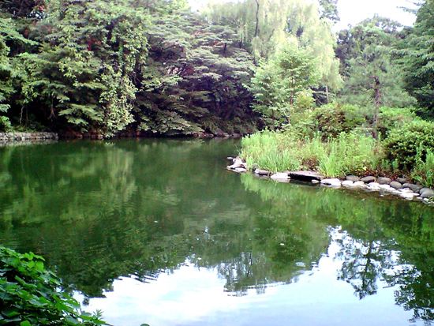

○○が△△にて★★しました。

うとうととして目がさめると女はいつのまにか、隣のじいさんと話を始めている。このじいさんはたしかに前の前の駅から乗ったいなか者である。発車まぎわに頓狂な声を出して駆け込んで来て、いきなり肌をぬいだと思ったら背中にお灸のあとがいっぱいあったので、三四郎の記憶に残っている。じいさんが汗をふいて、肌を入れて、女の隣に腰をかけたまでよく注意して見ていたくらいである。
女とは京都からの相乗りである。乗った時から三四郎の目についた。第一色が黒い。三四郎は九州から山陽線に移って、だんだん京大阪へ近づいて来るうちに、女の色が次第に白くなるのでいつのまにか故郷を遠のくような哀れを感じていた。それでこの女が車室にはいって来た時は、なんとなく異性の味方を得た心持ちがした。この女の色はじっさい九州色であった。
三輪田のお光さんと同じ色である。国を立つまぎわまでは、お光さんは、うるさい女であった。そばを離れるのが大いにありがたかった。けれども、こうしてみると、お光さんのようなのもけっして悪くはない。
ただ顔だちからいうと、この女のほうがよほど上等である。口に締まりがある。目がはっきりしている。額がお光さんのようにだだっ広くない。なんとなくいい心持ちにできあがっている。それで三四郎は五分に一度ぐらいは目を上げて女の方を見ていた。時々は女と自分の目がゆきあたることもあった。じいさんが女の隣へ腰をかけた時などは、もっとも注意して、できるだけ長いあいだ、女の様子を見ていた。その時女はにこりと笑って、さあおかけと言ってじいさんに席を譲っていた。それからしばらくして、三四郎は眠くなって寝てしまったのである。
- その寝ているあいだに女とじいさんは懇意になって話を始めたものとみえる。
- 目をあけた三四郎は黙って二人の話を聞いていた。
- 女はこんなことを言う。
子供の玩具はやっぱり広島より京都のほうが安くっていいものがある。京都でちょっと用があって降りたついでに、蛸薬師のそばで玩具を買って来た。久しぶりで国へ帰って子供に会うのはうれしい。しかし夫の仕送りがとぎれて、しかたなしに親の里へ帰るのだから心配だ。夫は呉にいて長らく海軍の職工をしていたが戦争中は旅順の方に行っていた。戦争が済んでからいったん帰って来た。まもなくあっちのほうが金がもうかるといって、また大連へ出かせぎに行った。はじめのうちは音信もあり、月々のものもちゃんちゃんと送ってきたからよかったが、この半年ばかり前から手紙も金もまるで来なくなってしまった。不実な性質ではないから、大丈夫だけれども、いつまでも遊んで食べているわけにはゆかないので、安否のわかるまではしかたがないから、里へ帰って待っているつもりだ。